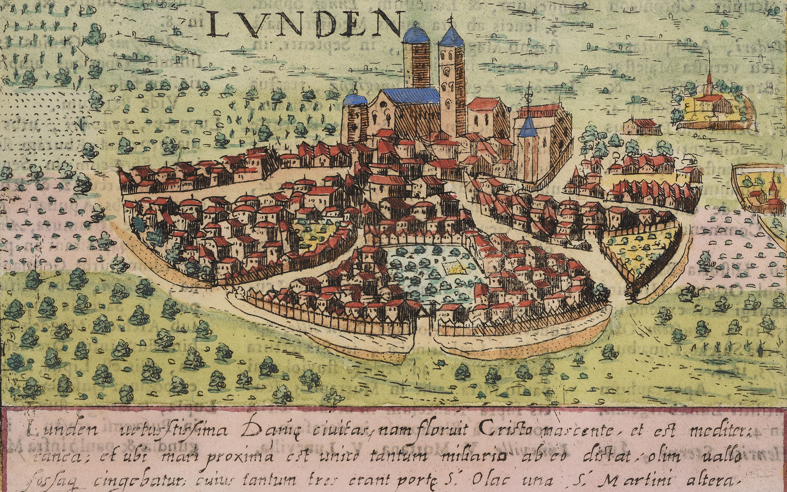

Plats jag tycker om:
Lund
Jag studerade i Lund i över 3 år och när jag inte längre hade orsak att pendla dit så upptäckte jag att det var ett ställe jag hade börjat sakna. Detta skulle vara en kort beskrivning så jag vill inte gå in i det abstrakta för mycket men jag kan avsluta med att säga att det som får mig att gilla Lund är dess "look" (fint ställe) tillsammans med dess anda. Den har en anda som får mig att förstå folk när dem varit i New York ett tag och sedan sagt att det är "The greatest city in the world". Lund, tror jag, får mig att förstå den känslan.

Erfarenhet av utveckling och programmering:
Saker jag gillar att göra:
- Läsa gamla superhjälteserietidningar från 60- och 70-talet
- E-spel, både retro (t.ex. Resident Evil) och moderna (t.ex. Dark Souls)
- Att ta promenader för den dagliga motionen men också för att få igång kreativa tankegångar
- Kolla på internetinnehåll, främst från Youtube, för att bli medveten om olika trender och upplysningar. Några kanaler jag gillar med cool content är "NFB" (offentlig kanadensisk film- och digitala medieproducent och distributör), "Archipel" och "TRNGL".
- Kolla gamla filmer och tv-serier från 70-talet och bakåt, såsom Planet of the Apes, Invasion of the Body Snatchers, Outer Limits, osv.